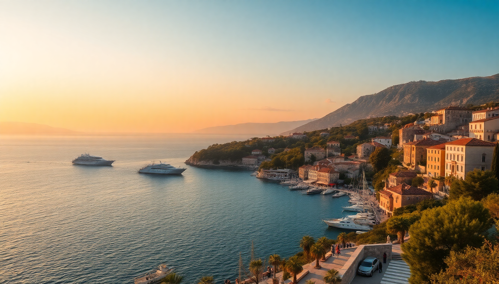

Best Day Trips from Split: Hvar, Krka, Trogir

I spent a week based in Split last summer, using it as a launchpad for day trips. The city itself is lively—Diocletian’s Palace in the old town is a maze of Roman ruins and buzzing cafes—but the real draw is what lies within an hour or two. Hvar, Krka, and Trogir each offer something distinct. Here’s what I learned about doing them right, without wasting time or money.
Is Hvar worth the ferry ride from Split?
Yes, but only if you go with a plan. Hvar town is glossy and crowded in peak season—yachts, designer shops, and cocktail bars line the waterfront. I found the real charm away from the port. We took the early Jadrolinija catamaran from Split (about an hour, tickets around €8 each way) and arrived before the midday rush.
- Hvar Town—stroll the main square, climb the Spanjola Fortress for views of the Pakleni Islands
- Stari Grad—a quieter, older settlement a 20-minute bus ride away; we had lunch at Konoba Kokot (local peka, no tourist markup)
- Pakleni Islands—water taxi from Hvar town (€10 round trip) to Jerolim Beach for nude swimming or Stipanska for a beach club vibe
- Skip the lavender fields unless you’re here in June—otherwise it’s dry brush and disappointment
If you want a proper beach day, stay on the ferry until Jelsa or Vrboska on the north side. Less glamorous, more authentic, and cheaper seafood.
How do you actually visit Krka National Park without the crowds?
Krka is beautiful but marketed as a “mini Plitvice”—it’s not. The waterfalls are impressive, but the main Skradinski Buk area turns into a human traffic jam by 11 AM. We solved this by arriving at 8 AM (park opens at 8, we drove from Split in 90 minutes) and heading straight to the swimming zone under the falls.
- Skradinski Buk—the main cascade, walk the wooden boardwalks early; swimming is allowed in roped-off sections
- Roski Slap—a quieter set of falls a 20-minute drive north; fewer people, better photo ops
- Visovac Island—a Franciscan monastery on an island in the middle of the lake; accessible by boat from the park entrance (€5)
- Our route—park at Lozovac entrance, take the free shuttle down to Skradinski Buk, swim, then drive to Roski Slap before noon
We skipped the organized tour buses from Split. They pack you in, limit your time, and herd you through the main path. Renting a car from Sixt at Split airport cost us €45 for the day—worth every kuna for the flexibility.
What’s the best way to do Trogir in half a day?
Trogir is small. That’s its strength. You can see the entire old town—a Unesco World Heritage site on a tiny island—in three hours, including a long lunch. I liked it more than Dubrovnik’s old town because it felt lived-in, not just a cruise-ship backdrop.
- Kamerlengo Fortress—climb the tower for a 360° view of the town and the sea (€3 entry)
- St. Lawrence Cathedral—the main square landmark; the portal carvings are worth a close look
- The Promenade (Riva)—lined with cafes; grab a coffee at Caffe Bar Marmont and watch the boats
- Lunch at Trattoria Don Dino—fresh pasta and grilled fish, no tourist menu, about €20 per person
We took the local bus from Split (line 37, €3.50, 45 minutes) and walked across the bridge into town. Coming back, we stopped at Čiovo Beach—a 10-minute walk from the bus station—for a quick swim before the return bus.
Should you take a guided tour or go solo?
I’m usually a solo traveler, but for Krka and Hvar, guided tours have one solid advantage: they handle the logistics. The ferry lines to Hvar can be 30 minutes in July, and Krka’s parking lot fills by 9:30 AM. If you’re not an early riser or you’re traveling with kids, a tour removes the stress.
- Krka full-day tour—includes boat ride to Skradinski Buk and lunch at a local farmstead; we heard good things about GetYourGuide’s Krka and Sibenik combo
- Hvar speedboat tour—covers Hvar town, Pakleni Islands, and a blue-cave stop; pricier but you skip the catamaran queues
- Trogir walking tour—not necessary; the town is small enough to self-guide with a map from the tourist office
I reserved a ferry ticket online through Jadrolinija’s website for Hvar and drove myself to Krka. Trogir is the easiest—no tour needed, just show up.
When is the best time to take these day trips?
May-June and September-October are the sweet spots. July and August are brutally hot (35°C+ by noon) and packed with cruise passengers. I made the mistake of doing Krka in mid-August last year and spent 20 minutes queuing for the shuttle bus.
- May—wildflowers in Krka, mild temps, thin crowds on Hvar ferries
- June—sea warm enough for swimming in the Pakleni Islands, lavender blooms on Hvar
- September—water still warm, kids back in school, Trogir’s Riva nearly empty at sunset
- Avoid—late July through August for Krka and Hvar; Trogir handles crowds better year-round
We went back in late September and had Skradinski Buk almost to ourselves by 9 AM. The water was 22°C—chilly but refreshing after the hike.
What should you pack for a day trip from Split?
I learned this the hard way after a sunburned, dehydrated afternoon in Hvar. The sun in Dalmatia is intense even when it’s cloudy, and water fountains are rare outside Split.
- Reusable water bottle—fill up at the public fountain near Diocletian’s Palace before you leave
- Swimwear and a quick-dry towel—Krka allows swimming, and you’ll want to jump in the sea at Hvar or Trogir
- Comfortable walking shoes—the stone streets in Trogir and Hvar town are slippery and uneven
- Sunscreen (SPF 50)—the Croatian coast has high UV; don’t rely on shade
- Cash (kuna or euros)—many konobas in Stari Grad and Roski Slap don’t take cards
For Krka, bring water shoes. The rocks under the waterfalls are sharp, and the wooden boardwalks get slick.
FAQ
Is Krka better than Plitvice for a day trip from Split? Krka is closer (90 minutes drive vs 2.5 hours to Plitvice) and you can swim in the waterfalls. Plitvice is larger and more dramatic, but requires a full day with an early start. If you only have one day, choose Krka for the swimming. If you have two days, do Plitvice as an overnight trip.
Can you visit Hvar and Trogir in the same day from Split? Technically yes, but I wouldn’t. You’d need the 6 AM catamaran to Hvar, rush through town, catch a 1 PM ferry back, then bus to Trogir. You’d spend more time in transit than exploring. Each deserves its own half-day.
Do I need to book ferry tickets to Hvar in advance? In July and August, yes. The Jadrolinija catamaran sells out by 9 AM on weekends. Book online at least 48 hours ahead. In shoulder season (May, June, September), you can buy at the port 30 minutes before departure without issue.
Conclusion
- Hvar is worth the ferry if you skip the main town crowds and head to Stari Grad or the Pakleni Islands for swimming
- Krka delivers if you arrive before 9 AM and swim at Skradinski Buk—skip the tour buses and drive yourself
- Trogir is the easiest day trip: cheap bus from Split, compact old town, good lunch, and a beach on the way back
- May and September are the ideal months for all three—fewer people, lower prices, and comfortable heat
- Pack light but smart—water, swimwear, cash, and sunscreen will save you money and hassle